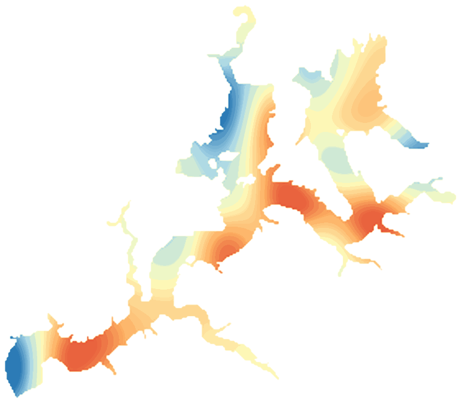

LakeScope › OK
Grand Lake today
Updated 2026-11-14 - Atlas Labs
Slightly murky, 64°F water, level steady, near normal, calm this morning.
Water level
742.04 ft
U.S. Army Corps of Engineers - 2026-11-14
7-day trend: steady (-0.04 ft). Compared with normal for this date: -0.1 ft (same weeks, 2016-2025).
Water clarity and algae
Slightly murky Last clear view: a few days ago.
Surface temperature
64°F
seen from space on 2026-11-11

Ice
Open - 0% ice cover
Estimate from weather and satellite, not a measurement. Check the ice yourself before going on it.
Weather, next 3 days
| Day | Sky | High / low | Wind | Rain |
|---|---|---|---|---|
| Saturday | Widespread Frost then Mostly Sunny | 55 / 39°F | 5 mph SE | 0% |
| Sunday | Partly Sunny then Chance Rain Showers | 53 / 37°F | 5 mph SE | 39% |
| Monday | Sunny | 59 / 39°F | - mph | 0% |
Sunrise 06:56 - sunset 17:10 - Waxing crescent. National Weather Service.
Get the LakeScope app: alerts and the 3-D view of Grand Lake